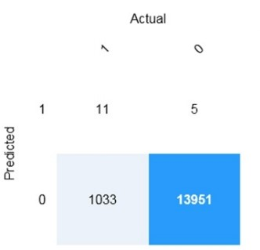

1. A technique that converts words into vectors is called------ ?
2. For a machine learning progress, how should you split data for training and evaluation?
3. Ensure AI system Operate as they were originaly designed,respond to unanticipated condition and resist harmful manipulation.
4.This statement belong to which category "Determine whether the review is positive & negative"
5.Which task should you include to ensure that the service meets the Microsoft transparency principle for responsible AI?
6.Your company is exploring the use of voice recognition technologies in its smart home devices. The company wants to identify any barriers that might unintentionally leave out specific user groups. This an example of which Microsoft guiding principle for responsible AI?
7. You should Evluate the model by using same data used to train the model?
8. You use Azure Machine Learning designer to publish an inference pipeline. Which two parameters should you use to access the web service? Each correct answer presents part of the solution.?
9.Which of the following is commonly used as a model for Regression?
10.You need to use machine learning to support early detection of the different brain haemorrhage types in the images before the images are reviewed by a person. This is an example of which type of machine learning??

calculate recall using confusion metrices?
12.Which Statement belong to clustering?
13.You are developing a solution that uses the Text Analytics service. You need to identify the main talking points in a collection of documents. Which type of natural language processing should you use?
14. Which statement follow the Text Analytics Services?
15. John works at Google and lives in New York. He attended a conference in San Francisco last week.
Recognize number of entity use in above sentence?
16.Use the language detection capability of Azure AI Language to identify the language in which text is written. You can submit multiple documents at a time for analysis. For each document submitted the service will detect:?